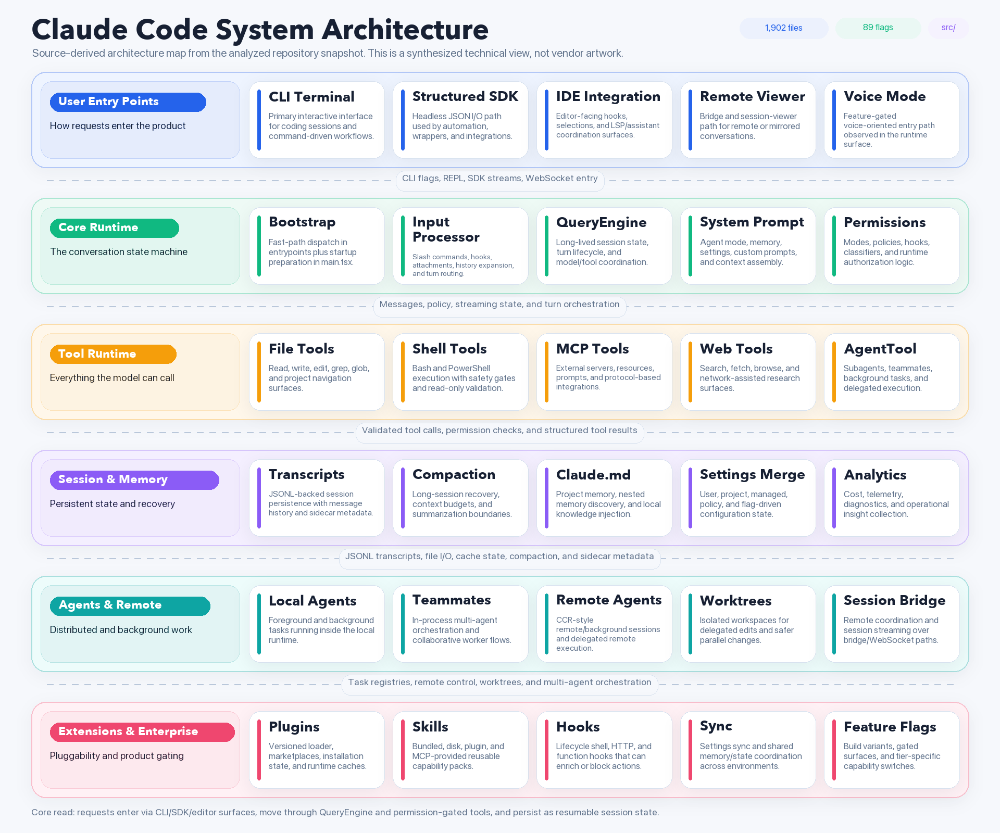
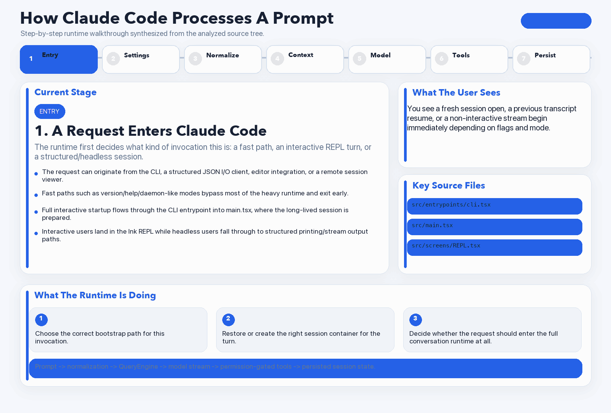
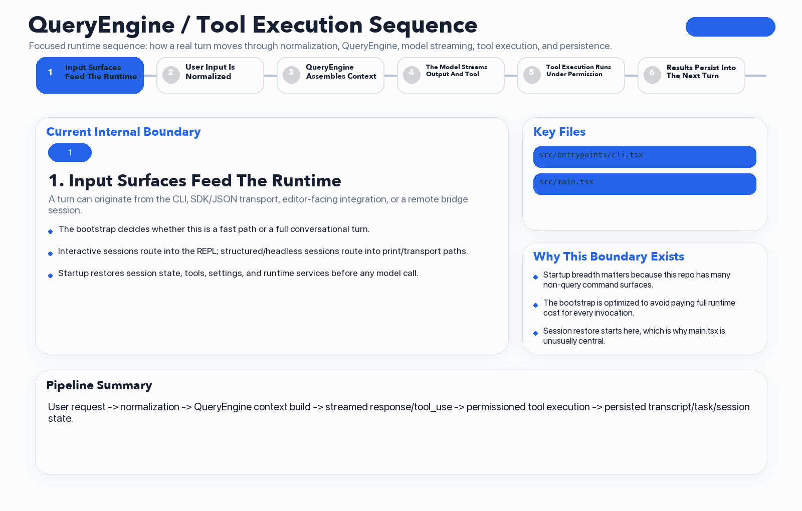
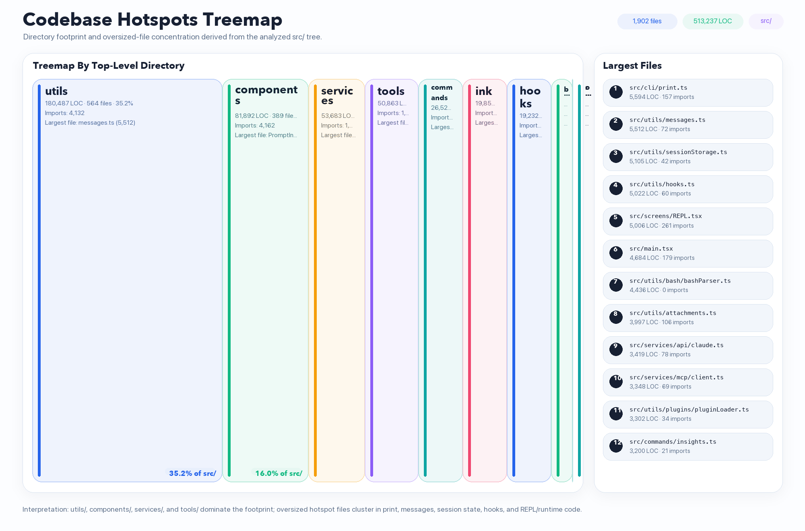
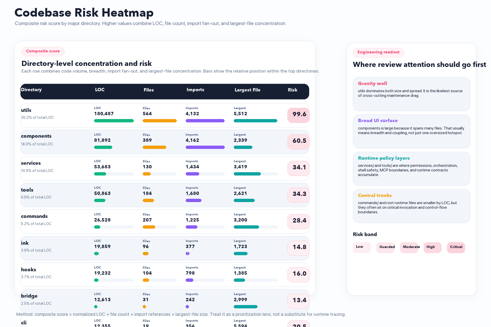
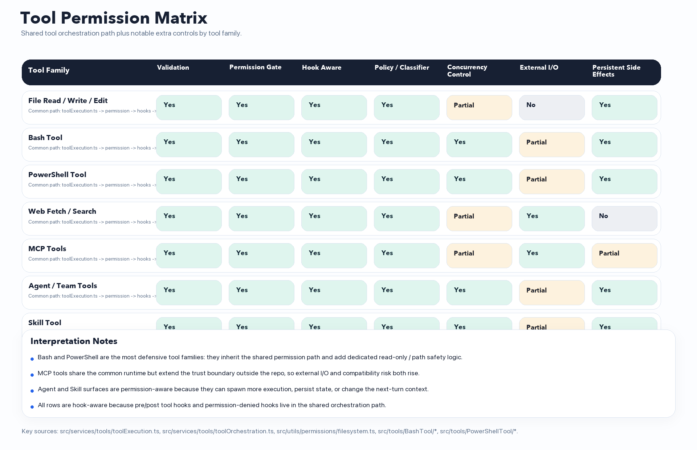
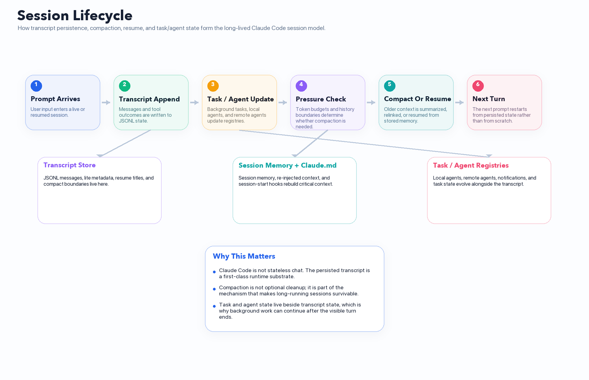
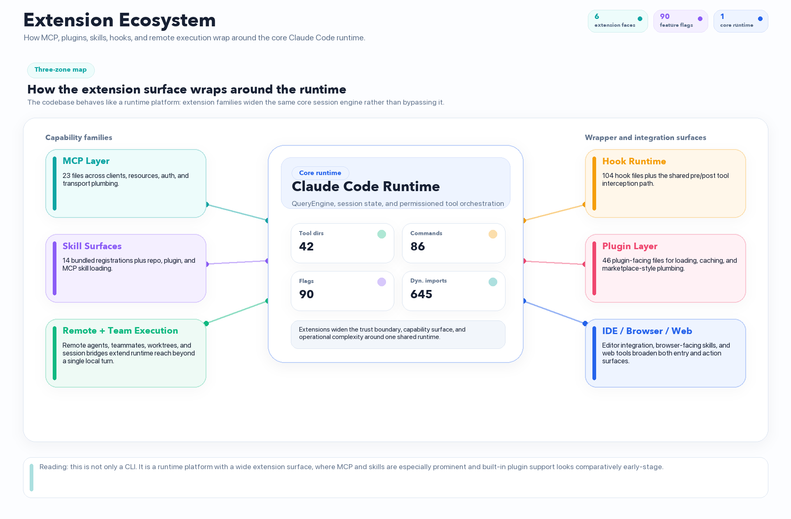

{kind=link}
{kind=link}
{kind=link}
The source reads like a mature released runtime surrounded by many gated, preview, ant-only, and build-variant features, including BUDDY companion flows and computer-use surfaces.
A clean presentation layer built from direct analysis of the source snapshot: architecture, runtime flow, complexity hotspots, feature maturity, and maintainer-facing judgment in one place.
Use these direct entry points instead of browsing the repository tree. They open the rendered report, the landing visuals, and the longer engineering/user guides with cleaner paths.
The strongest through-lines in the source are the long-lived QueryEngine session model, a permission-heavy tool runtime, JSONL transcript persistence, and a surprisingly wide extension surface around MCP, hooks, skills, and remote/agent execution.
The source reads like a mature released runtime surrounded by many gated, preview, ant-only, and build-variant features, including BUDDY companion flows and computer-use surfaces.
`utils/` alone is 35.2% of the total analyzed LOC. It behaves more like an internal platform layer than a helpers folder.
`QueryEngine`, `query.ts`, tool execution, compaction, session storage, and `main.tsx` form the main control spine of the product.
The shell families, permission filesystem rules, hooks, and shared tool orchestration all show deliberate defensive design.
90 feature flags and 645 dynamic imports suggest strong product segmentation and performance-aware runtime shaping.
MCP, hooks, skills, plugins, remote sessions, worktrees, and teams are not bolt-ons. They are built into the runtime model.
The largest files cluster around print/output, message shaping, session persistence, hook control flow, REPL behavior, and shell safety.
Click any image to inspect it full size. The gallery mixes architecture, runtime, complexity, extension, and operational views so the codebase can be understood from multiple angles instead of from one monolithic diagram.
Layered architecture view from entry points through runtime, tools, session state, and extension surfaces.

High-level animated walkthrough of how a prompt enters the runtime and becomes persisted session state.

Focused internal sequence showing how normalization, QueryEngine, model streaming, tool orchestration, and persistence chain together.

Directory footprint plus oversized-file concentration, making the complexity center of gravity obvious at a glance.

Composite risk score by major directory using LOC, breadth, fan-out, and largest-file concentration.

Matrix view of shared validation, permission gating, hook-awareness, policy, and side-effect characteristics across tool families.

Explicit session-state view covering transcript persistence, compaction, resume, task state, and memory re-entry.

MCP, hooks, skills, plugins, remote sessions, and wider tooling are shown as a coherent platform surface around the runtime core.

The repository reads like mature product software that has already accumulated real operational concerns: performance-sensitive startup branching, variant management, transcript safety, compaction recovery, and extension compatibility.
{kind=link}
{kind=link}
{kind=link}
{kind=link}
{kind=link}
{kind=link}